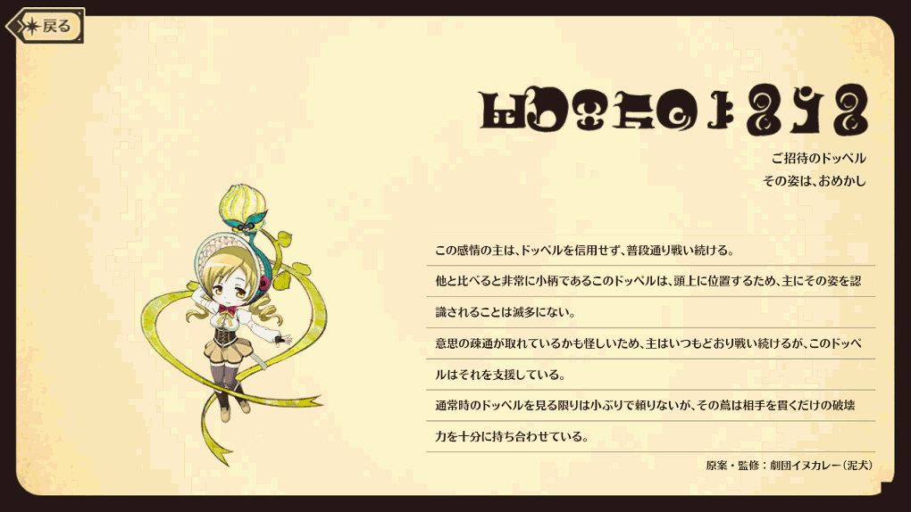
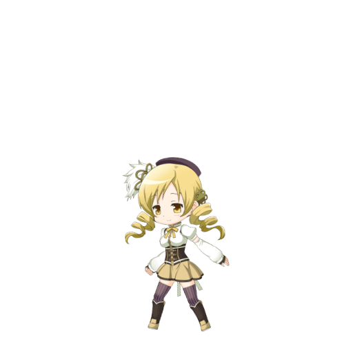

A magical girl that has been fighting witches in Mitakihara City for longer than Kaname Madoka and the others. A 3rd year at Mitakihara Middle School. As a magical girl, she is a good senpai to Madoka and the others, and she takes pride in being able to save people. She likes black tea.

| STATS | HP | ATK | DEF |
|---|---|---|---|
| Initial | 4687 | 2079 | 1480 |
| Max at ★4 | 16629 | 7646 | 5212 |
| Max at ★5 | 20941 | 9652 | 6553 |
★4: Damage UP [VII] & Guaranteed Bind Edge & Guaranteed Burn Edge
★5: Damage UP [IX] & Guaranteed Bind Edge & Guaranteed Burn Edge
★4: Damage All Enemies [VI] & Bind (All / 1 T) & Defense DOWN (Self / 1 T) & Skill Quicken (All / 1 T) [NA only]
★5: Damage All Enemies [VIII] & Bind (All / 1 T) & Burn (All / 3 T) & Defense DOWN (Self / 1 T) & Skill Quicken (All / 1 T) [NA only]
Damage All Enemies [X] & Bind (All / 1 T) & Burn (All / 3 T)